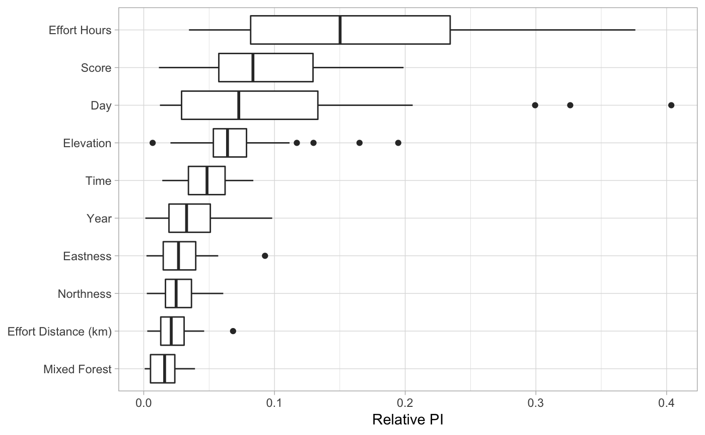

For all of the available predictors in a single set of species eBird Status and Trends products, this function makes a bar plot of those relative importances, from highest to lowest. Many function parameters allow for customized plots.
plot_pis( pis, ext, by_cover_class = FALSE, n_top_pred = 50, pretty_names = TRUE, plot = TRUE )
| pis | data.frame; predictor importance data from |
|---|---|
| ext | ebirdst_extent object; the spatiotemporal extent to filter the data to. Required, since results are less meaningful over large spatiotemporal extents. |
| by_cover_class | logical; whether to aggregate the four FRAGSTATS metrics for the land cover classes into single values for the land cover classes. |
| n_top_pred | integer; how many predictors to show. |
| pretty_names | logical; whether to convert cryptic land cover codes to readable land cover class names. |
| plot | logical; whether to plot predictor importance or just return top predictors. |
Plots a boxplot of predictor importance and invisibly returns a named
vector of top predictors, and their median predictor importance, based on
the n_top_pred parameter.
#>pis <- load_pis(sp_path) # define a spatiotemporal extent to plot data from bb_vec <- c(xmin = -86, xmax = -83, ymin = 41.5, ymax = 43.5) e <- ebirdst_extent(bb_vec, t = c("05-01", "05-31")) top_pred <- plot_pis(pis, ext = e, by_cover_class = TRUE, n_top_pred = 10)top_pred#> Effort Hours Score #> 89.99205 60.02343 #> Nighttime Lights Solar Noon Diff #> 54.64375 51.94917 #> Sparse Forests Effort Distance (km) #> 50.80866 50.00172 #> Day Open Forests #> 44.98163 44.98001 #> Deciduous Broadleaf Forests Elevation Median #> 43.05994 40.71359